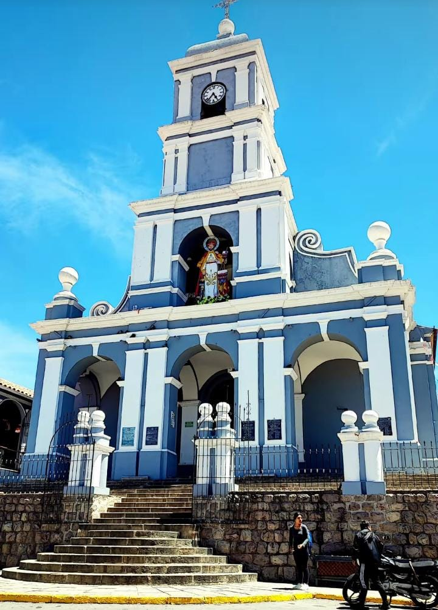
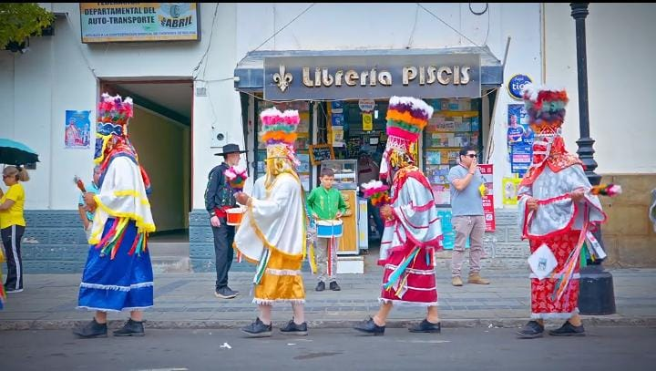
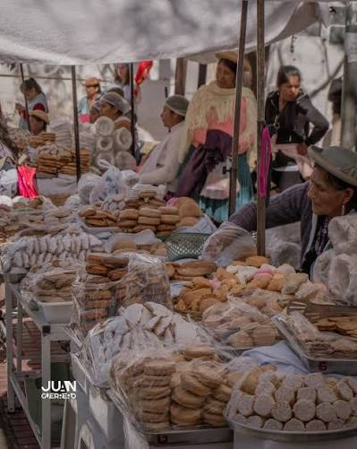
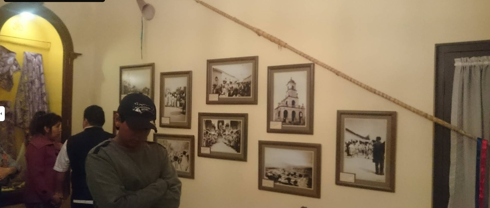
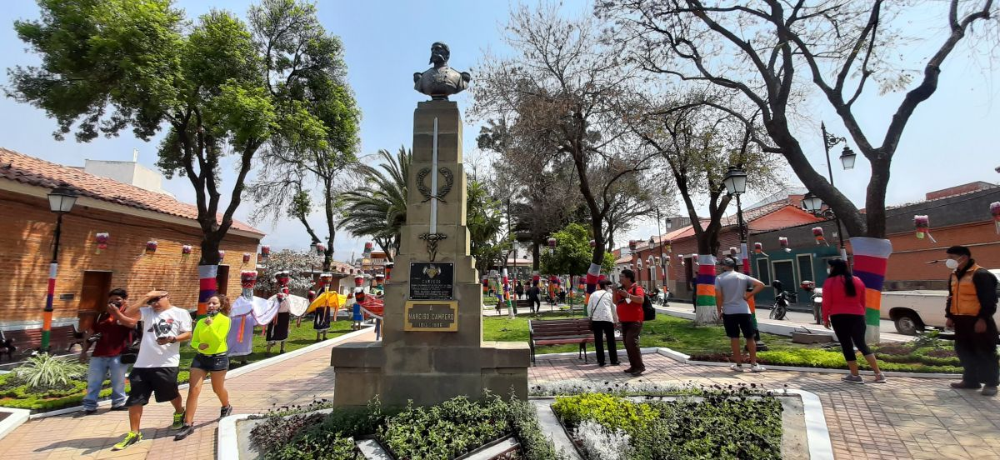
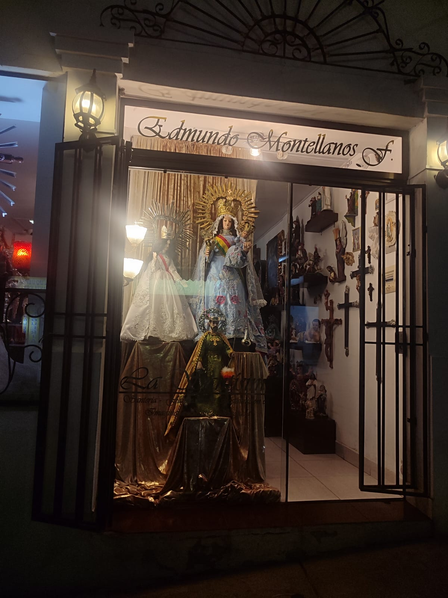

Qué ver / Recorrido
Un templo para mirar de cerca
Los puntos de interés dentro y alrededor de la Iglesia de San Roque.

La fachada
Piedra, adobe y detalles barrocos que hoy se leen como un umbral urbano hacia el casco histórico de Tarija.

El altar mayor
Tallado en madera policromada, narra la vida y los milagros de San Roque, patrono del templo.

La torre y el campanario
Una presencia vertical que orienta la mirada desde la esquina de General Trigo y Fray Manuel Mingo.

La Fiesta Grande
Cada agosto, los Chunchos Promesantes recorren la ciudad con turbante, ponchillo y pollerín en honor al santo.

Las masitas tradicionales
Preparaciones dulces características de la fiesta, que se ofrecen en los puestos alrededor del templo durante la celebración.

El Museo de San Roque
Ubicado junto al templo, resguarda piezas y objetos vinculados a la historia religiosa y cultural de la Fiesta Grande.

La Plaza Campero
El espacio público frente al templo, engalanado con decoración alusiva a los Chunchos Promesantes durante la Fiesta Grande.

Los vinos típicos
Vinos artesanales de la región, ofrecidos por vendedores instalados alrededor del templo durante la celebración.

Las santerías aledañas
Locales cercanos al templo donde se consiguen artículos religiosos y recuerdos vinculados a la devoción a San Roque.
Circuito recomendado
-
Paso 1
Observa la fachada desde la plazoleta
Aprovecha la luz de la mañana para apreciar la textura de la piedra y el adobe.
-
Paso 2
Ingresa y recorre el altar mayor
Respeta los horarios de misa y observa el detalle de la madera policromada.
-
Paso 3
Sube hacia la torre y el mirador cercano
Desde los alrededores del templo se aprecian vistas del casco urbano de Tarija.
-
Paso 4
Consulta el calendario de la Fiesta Grande
Si tu visita coincide con agosto o septiembre, no te pierdas la procesión de los Chunchos Promesantes.